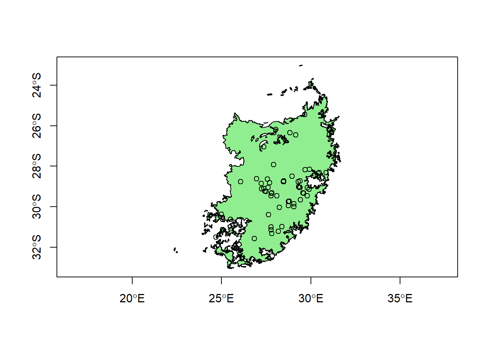

Part 4 Creating sf objects from table data
4.1 Adding CSV data
Now let’s say we have some point data and we want to add it to the map. However, in this case we’ve got it stored as a comma-separated values (CSV) file. Let’s use read.csv to read the data in, and class to look at the object class.
#Import the SARadiocarbon.csv data
c14table<-read.csv("SARadiocarbon.csv")
class(c14table)## [1] "data.frame"These data are radiocarbon dates from the South African Radiocarbon Database. The read.csv function reads this in as a dataframe only, so it isn’t being treated as an sf object just yet. Let’s take a look at the dataframe using the head function, which gives a preview of the first 6 rows:
#Take a look at the first 6 rows
head(c14table)## SITE SITE_CODE LATITUDE LONGITUDE COUNTRY PROVINCE_DISTRICT RFZ
## 1 Thula Mela TUM -22.431 31.194 South Africa Limpopo S
## 2 Thula Mela TUM -22.431 31.194 South Africa Limpopo S
## 3 Thula Mela TUM -22.431 31.194 South Africa Limpopo S
## 4 Thula Mela TUM -22.431 31.194 South Africa Limpopo S
## 5 Thula Mela TUM -22.431 31.194 South Africa Limpopo S
## 6 Thula Mela TUM -22.431 31.194 South Africa Limpopo S
## BIOME CONTEXT TECHNIQUE MATERIAL SPECIES LAB_ID DATE
## 1 Savanna Biome conventional 14C charcoal Pta-6079 480
## 2 Savanna Biome conventional 14C charcoal Pta-7107 530
## 3 Savanna Biome conventional 14C charcoal Pta-7103 390
## 4 Savanna Biome conventional 14C charcoal Pta-7105 560
## 5 Savanna Biome conventional 14C bone Homo sapiens Pta-7276 370
## 6 Savanna Biome conventional 14C bone Homo sapiens Pta-7243 520
## UNCERTAINTY ARCH_PERIOD ARCH_SUBPERIOD SAMPLE_CONTEXT SITE_TYPE DELTA_13
## 1 30 Iron Age settlement NA
## 2 30 Iron Age settlement NA
## 3 35 Iron Age settlement NA
## 4 35 Iron Age settlement NA
## 5 40 Iron Age settlement NA
## 6 40 Iron Age settlement NA
## REFCODE NOTES
## 1 vogel2000rds Khami
## 2 vogel2000rds Mutamba
## 3 vogel2000rds Khami
## 4 vogel2000rds Mutamba
## 5 vogel2000rds Khami
## 6 vogel2000rds KhamiAmong the columns in this dataset is one called BIOME, which tells us from which biome the date was recovered. There are more than 2000 dates in the set, but there probably aren’t that many biomes in the dataset. Again, we can use unique to get a list of the ones included here.
#Get unique biome names
unique(c14table$BIOME)## [1] "Savanna Biome" "Grassland Biome"
## [3] "Succulent Karoo Biome" "Azonal Vegetation"
## [5] "Desert Biome" "Nama-Karoo Biome"
## [7] "Fynbos Biome" "Thicket Biome"
## [9] "Forests" "Indian Ocean Coastal Belt"
## [11] ""While there are some minor differences, these match up pretty well with the names from our biomes shapefile. If we wanted just the dates from the grasslands, we could subset the data using this column.
#Get the grassland dates
c14grass<-subset(c14table,BIOME=="Grassland Biome")
unique(c14grass$BIOME)## [1] "Grassland Biome"Terrific. Now we want to make this usable with sf. Lucky for us this is already spatial data: coordinates are stored in the columns LONGITUDE and LATITUDE. We can use these columns as arguments with the st_as_sf to coerce the dataframe to a point dataset.
#Convert to point object
c14points<-st_as_sf(c14grass,coords=c("LONGITUDE","LATITUDE"),remove=FALSE)Notice that we added an argument to the st_as_sf function that says remove=FALSE. This means that when we use LONGITUDE and LATITUDE to generate our geometry, we don’t remove these columns. These will come in handy later on. For now, let’s check on the class of this new object.
class(c14points)## [1] "sf" "data.frame"OK, now it’s in the sf class, so we can add it to our map.
#Add to plot
plot(st_geometry(grassland),axes=T,col="light green")
plot(st_geometry(c14points),add=T)4.2 Subsetting using location data
Not bad! Notice that one point just east of the edge of the grassland boundary? It’s not clear what’s happened there: it could be from a site that is in a transition zone, or maybe was mislabeled by the data authors. Whatever it is, let’s say we don’t want to include that point. We can use subset again, but this time we only want to include points that are inside our grassland object. We’ll use st_bbox to get the extent of the grassland object:
st_bbox(grassland)## xmin ymin xmax ymax
## 22.33500 -33.06480 31.66951 -22.99997These values are the maximum and minimum x and y coordinates for the grassland object. We can see that the xmax, or the longitude that is the furthest to the east, is 31.66951. We can use subset and the LONGITUDE column we kept to pare it down.
c14points2<-subset(c14points, LONGITUDE < 31.66951)And then we plot again..
#Add to plot
plot(st_geometry(grassland),axes=T,col="light green")
plot(st_geometry(c14points2),add=T)
Fixed! This is an example of spatial subsetting. In this case, since there was only one point we wanted to prune and we had the LONGITUDE data handy, it was pretty easy to do it this way. But if the , we’d probably want to find a way to crop the points using the biome shape itself. This is something we’ll cover in more detail in another session.